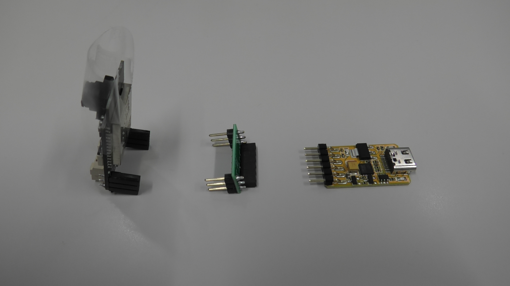
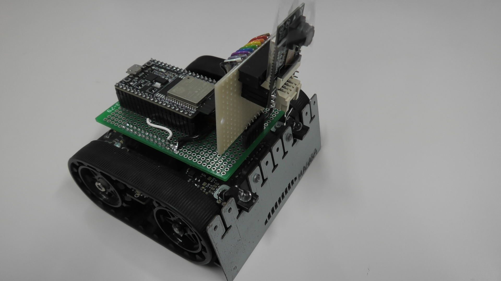

マリオカートライブもどき試作２号機
はじめに
１号機ではこれ以上の進展が見込めないので，新たな試作品としてカメラを別に用意しました．
１号機の配線では高周波に耐えられない感じがしたのでカメラ付きの ESP32キットを購入．
Webページには技適対応と明記されていませんが，スイッチサイエンスさんが取り扱う製品はすべて技適対応なようです．
製品画像を拡大すると技適マークが刻印されていました．
ただしこの製品にはUSBインタフェースがありませんので，別途書き込みツールが必要です．
販売元で推奨されている書き込みツールもスイッチサイエンスさんで取り扱っていたので，併せて購入しました．
さらにさらに... この書き込みツールは micro USB ではなく Type-C インタフェース．いやがらせとしか思えないｗｗ
サブノートは Type-C ですが，デスクトップPCでも書き込めるように変換アダプタまで用意しました．
GROVE I/F のケーブルは，このカメラモジュール（Unit Cam）で Zumo と通信するなら必要です．この GROVE I/F から GPIO#17 と GPIO#16（Serial2のTXとRX）が取り出せます．
Unit Cam への書き込みは以下の画像のような感じにしました．
なんとなくオスメス交互にしましたが，Unit Cam 単体でテストするときに，ブレッドボードに差しやすいよう Unit Cam のほうをオスにした方がよかったかもしれない．

注意事項ですが，Unit Cam のダウンロードポート（縦3pin）に 5V を入れるとカメラが壊れました．
Unit Cam にはたしかに 5V と刻印されていますが，そこにつながるダウンローダキットには 3.3V と刻印されています．
まんまと騙されました．Zumo から電源供給する場合は要注意です．
試作回路
試作１号機をそのまま流用します．Unit Cam用に電源（3.3V）だけ配線しました．
本当はこの Unit Cam だけで WiFi も Bluetooth もと思っていましたが，応答速度の必要なシーンでは，やはり1チップではしんどいですね．
せっかく ESP32-DevKitC ESP32-WROOM-32開発ボード も搭載してますから，
こちらはBLE通信用として使います．

サンプルスケッチ
試作１号機のWiFiテストと同じです．ボードも "ESP32 Dev Module" でOKです．
Unit Cam のピン配置は CAMERA_MODEL_M5STACK_PSRAM と同じだったので
#define CAMERA_MODEL_M5STACK_PSRAM // Has PSRAM
の行を有効にします．PSRAMは搭載していませんが...
動作結果
動画撮影～
<< 前のページに戻る